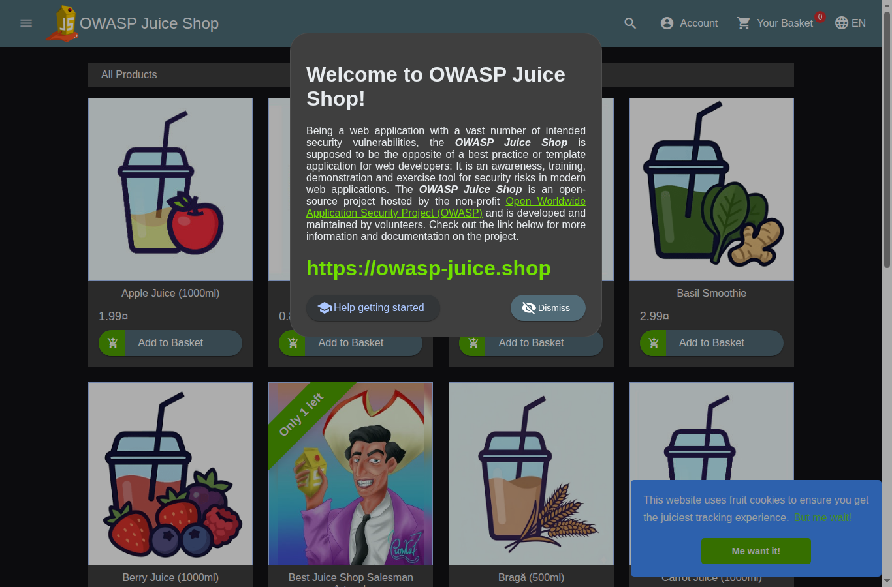
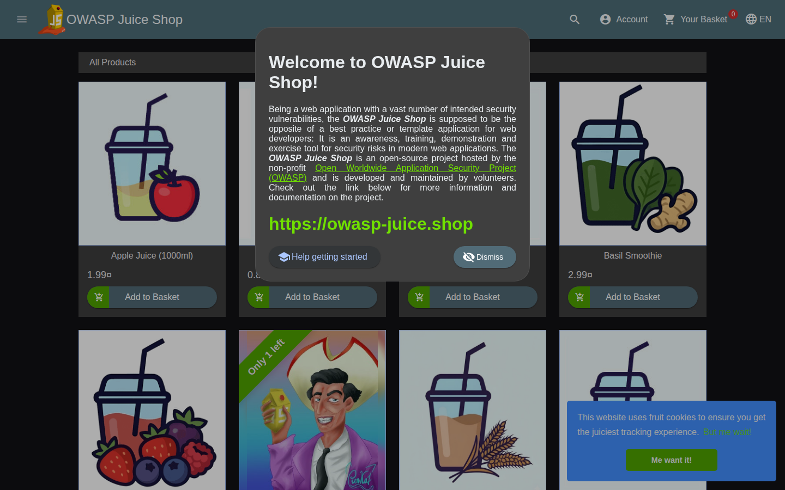
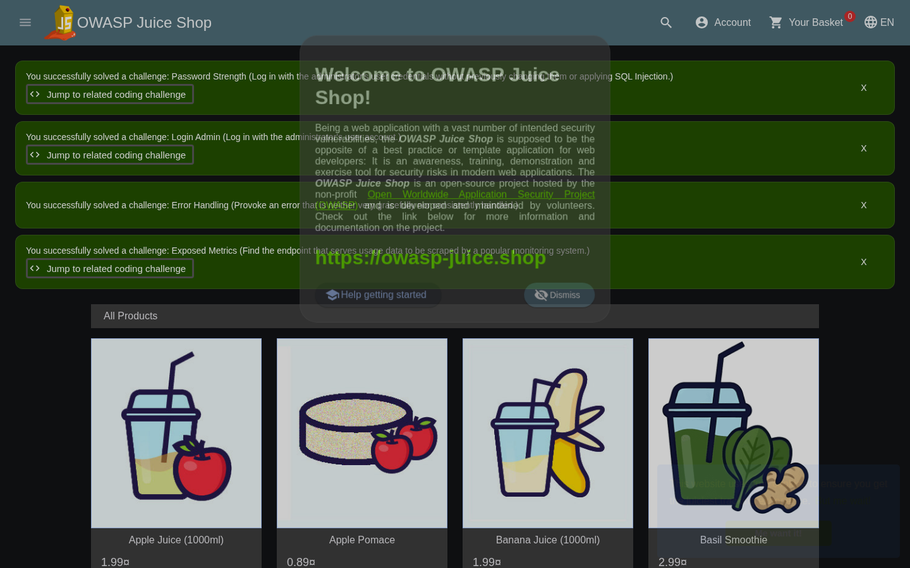

Assessment at a glance
10
Findings
5
Remediated & re-tested
5
Open, recommendation only
78
Evidence records
6
Critical + High
Severity distribution
| Severity | Count | Findings |
|---|---|---|
| Critical | 1 | 007 |
| High | 5 | 001, 002, 006, 008, 009 |
| Medium | 3 | 003, 004, 010 |
| Low | 1 | 005 |
What this site is — and is not
Public (this site): findings, risk analysis,
remediation and re-testing results, architecture and report summary.
Read-only documentation. No application runtime, no database, no credentials.
Private (not published): the
intentionally vulnerable OWASP Juice Shop application and the live
before/after laboratory. It runs only on an isolated local host, bound to
loopback, and is deliberately unreachable from the internet. Controlled
validation of the vulnerabilities requires that private environment.
Findings
| ID | Title | Severity | Status |
|---|---|---|---|
| WEB-VUL-001 | SQL Injection in the login endpoint bypasses authentication | High | Remediated |
| WEB-VUL-002 | Object-level access control gap on /rest/basket/:id | High | Remediated |
| WEB-VUL-003 | Missing security HTTP response headers | Medium | Remediated |
| WEB-VUL-004 | Unauthenticated exposure of deployment/internal information | Medium | Open |
| WEB-VUL-005 | User feedback data returned without authentication | Low | Open |
| WEB-VUL-006 | A customer-role account can read the full admin-only user directory | High | Open |
| WEB-VUL-007 | JWT payload carries the account password hash, role and TOTP secret field | Critical | Open |
| WEB-VUL-008 | /encryptionkeys/ directory and its key files are downloadable without authentication | High | Remediated |
| WEB-VUL-009 | Boolean-based SQL injection in /rest/products/search, with the SQLite engine and | High | Open |
| WEB-VUL-010 | API returns Access-Control-Allow-Origin: for every origin with no allow-list | Medium | Remediated |
Laboratory screenshots
Original captures from the group's own isolated laboratory

LAB-003-application-running.png

LAB-003-juice-shop-home.png

REMED-001-after-remediated-ui.png